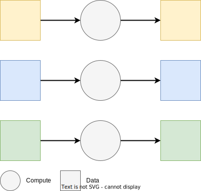

Batch Training with Ray Data
Contents
Batch Training with Ray Data#
Batch training and tuning are common tasks in simple machine learning use-cases such as time series forecasting. They require fitting of simple models on data batches corresponding to different locations, products, etc. Batch training can take less time to process all the data at once, but only if those batches can run in parallel!
This notebook showcases how to conduct batch training regression algorithms from XGBoost and Scikit-learn with Ray Data. XGBoost is a popular open-source library used for regression and classification. Scikit-learn is a popular open-source library with a vast assortment of well-known ML algorithms.
Tip
The workload showcased in this notebook can be expressed using different Ray components, such as Ray Data, Ray Tune and Ray Core. For more information, including best practices, see Many Model Training.

For the data, we will use the NYC Taxi dataset. This popular tabular dataset contains historical taxi pickups by timestamp and location in NYC.
For the training, we will train separate regression models to predict trip_duration, with a different model for each dropoff location in NYC. Specifically, we will conduct an experiment for each dropoff_location_id, to find the best either XGBoost or Scikit-learn model, per location.
Contents#
In this this tutorial, you will learn about:
Walkthrough#
Let us start by importing a few required libraries, including open-source Ray itself!
import os
num_cpu = os.cpu_count()
print(f"Number of CPUs in this system: {num_cpu}")
from typing import Tuple, List, Union, Optional, Callable
import time
import pandas as pd
import numpy as np
print(f"numpy: {np.__version__}")
import pyarrow
import pyarrow.parquet as pq
import pyarrow.dataset as pds
print(f"pyarrow: {pyarrow.__version__}")
from ray.data import Dataset
Number of CPUs in this system: 8
numpy: 1.23.3
pyarrow: 6.0.1
import ray
if ray.is_initialized():
ray.shutdown()
ray.init()
2022-12-08 17:04:06,689 INFO worker.py:1223 -- Using address localhost:9031 set in the environment variable RAY_ADDRESS
2022-12-08 17:04:06,691 INFO worker.py:1333 -- Connecting to existing Ray cluster at address: 172.31.174.62:9031...
2022-12-08 17:04:06,700 INFO worker.py:1509 -- Connected to Ray cluster. View the dashboard at https://console.anyscale-staging.com/api/v2/sessions/ses_gyl6mbksa8xt7b149ib6abld/services?redirect_to=dashboard
Ray
| Python version: | 3.8.5 |
| Ray version: | 2.0.0 |
| Dashboard: | http://console.anyscale-staging.com/api/v2/sessions/ses_gyl6mbksa8xt7b149ib6abld/services?redirect_to=dashboard |
print(ray.cluster_resources())
{'CPU': 8.0, 'object_store_memory': 9093674188.0, 'memory': 18187348379.0, 'node:172.31.174.62': 1.0}
# For benchmarking purposes, we can print the times of various operations.
# In order to reduce clutter in the output, this is set to False by default.
PRINT_TIMES = False
def print_time(msg: str):
if PRINT_TIMES:
print(msg)
# To speed things up, we’ll only use a small subset of the full dataset consisting of two last months of 2019.
# You can choose to use the full dataset for 2018-2019 by setting the SMOKE_TEST variable to False.
SMOKE_TEST = True
Creating a Dataset #
Tip
Ray Data uses PyArrow dataset and table for reading or writing large parquet files. Its native multithreaded C++ adpater is faster than pandas read_parquet, even using engine='pyarrow'. For more details see Ray Data User Guide.
Ray Data is the standard way to load and exchange data in Ray libraries and applications. We will use the Ray Data APIs to read the data and quickly inspect it.
First, we will define some global variables we will use throughout the notebook, such as the list of S3 links to the files making up the dataset and the possible location IDs.
# Define some global variables.
TARGET = "trip_duration"
s3_partitions = pds.dataset(
"s3://anonymous@air-example-data/ursa-labs-taxi-data/by_year/",
partitioning=["year", "month"],
)
s3_files = [f"s3://anonymous@{file}" for file in s3_partitions.files]
# Obtain all location IDs
location_ids = (
pq.read_table(s3_files[0], columns=["dropoff_location_id"])["dropoff_location_id"]
.unique()
.to_pylist()
)
# Use smoke testing or not.
starting_idx = -1 if SMOKE_TEST else 0
# drop location 199 to test error-handling before final git checkin
sample_locations = [141, 229, 173] if SMOKE_TEST else location_ids
# Display what data will be used.
s3_files = s3_files[starting_idx:]
print(f"NYC Taxi using {len(s3_files)} file(s)!")
print(f"s3_files: {s3_files}")
print(f"Locations: {sample_locations}")
NYC Taxi using 1 file(s)!
s3_files: ['s3://anonymous@air-example-data/ursa-labs-taxi-data/by_year/2019/06/data.parquet/ab5b9d2b8cc94be19346e260b543ec35_000000.parquet']
Locations: [141, 229, 173]
The easiest way to create a ray dataset is to use ray.data.read_parquet to read parquet files in parallel onto the Ray cluster.
Uncomment the cell below if you want to try it out.
# # This cell is commented out because it can take a long time!
# # In the next section "Filtering Read" we make it faster.
# # Read everything in the files list into a ray dataset.
# start = time.time()
# ds = ray.data.read_parquet(s3_files)
# print(f"Data loading time: {data_loading_time:.2f} seconds")
# ds
Filtering a Dataset on Read #
Normally there is some last-mile data processing required before training. Let’s just assume we know the data processing steps are:
Drop negative trip distances, 0 fares, 0 passengers.
Drop 2 unknown zones:
['264', '265'].Calculate trip duration and add it as a new column.
Drop trip durations smaller than 1 minute and greater than 24 hours.
Instead of blindly reading all the data, it would be better if we only read the data we needed. This is similar concept to SQL SELECT only rows, columns you need vs SELECT *.
Tip
Best practice is to filter as much as you can directly in the Dataset read_parquet().
Note that Ray Data’ Parquet reader supports projection (column selection) and row filter pushdown, where we can push the above column selection and the row-based filter to the Parquet read. If we specify column selection at Parquet read time, the unselected columns won’t even be read from disk. This can save a lot of memory, especially with big datasets, and allow us to avoid OOM issues.
The row-based filter is specified via Arrow’s dataset field expressions.
def pushdown_read_data(files_list: list, sample_ids: list) -> Dataset:
start = time.time()
filter_expr = (
(pds.field("passenger_count") > 0)
& (pds.field("trip_distance") > 0)
& (pds.field("fare_amount") > 0)
& (~pds.field("pickup_location_id").isin([264, 265]))
& (~pds.field("dropoff_location_id").isin([264, 265]))
& (pds.field("dropoff_location_id").isin(sample_ids))
)
dataset = ray.data.read_parquet(
files_list,
columns=[
"pickup_at",
"dropoff_at",
"pickup_location_id",
"dropoff_location_id",
"passenger_count",
"trip_distance",
"fare_amount",
],
filter=filter_expr,
)
data_loading_time = time.time() - start
print_time(f"Data loading time: {data_loading_time:.2f} seconds")
return dataset
# Test the pushdown_read_data function
ds_raw = pushdown_read_data(s3_files, sample_locations)
2022-12-08 17:04:09,202 WARNING read_api.py:291 -- ⚠️ The number of blocks in this dataset (1) limits its parallelism to 1 concurrent tasks. This is much less than the number of available CPU slots in the cluster. Use `.repartition(n)` to increase the number of dataset blocks.
Inspecting a Dataset #
Let’s get some basic statistics about our newly created Dataset.
As our Dataset is backed by Parquet, we can obtain the number of rows from the metadata without triggering a full data read.
print(f"Number of rows: {ds_raw.count()}")
Number of rows: 6941024
Similarly, we can obtain the Dataset size (in bytes) from the metadata.
print(f"Size bytes (from parquet metadata): {ds_raw.size_bytes()}")
Size bytes (from parquet metadata): 925892280
Let’s fetch and inspect the schema of the underlying Parquet files.
print("\nSchema data types:")
data_types = list(zip(ds_raw.schema().names, ds_raw.schema().types))
for s in data_types:
print(f"{s[0]}: {s[1]}")
Schema data types:
pickup_at: timestamp[us]
dropoff_at: timestamp[us]
pickup_location_id: int32
dropoff_location_id: int32
passenger_count: int8
trip_distance: float
fare_amount: float
Transforming a Dataset in parallel using custom functions #
Ray Data allows you to specify custom data transform functions. These user defined functions (UDFs) can be called using Dataset.map_batches(my_function). The transformation will be conducted in parallel for each data batch.
Tip
You may need to call Dataset.repartition(n) first to split the Dataset into more blocks internally. By default, each block corresponds to one file. The upper bound of parallelism is the number of blocks.
You can specify the data format you are using in the batch_format parameter. The dataset will be divided into batches and those batches converted into the specified format. Available data formats you can specify in the batch_format paramater include "pandas", "pyarrow", "numpy". Tabular data will be passed into your UDF by default as a pandas DataFrame. Tensor data will be passed into your UDF as a numpy array.
Here, we will use batch_format="pandas" explicitly for clarity.
# A pandas DataFrame UDF for transforming the Dataset in parallel.
def transform_df(input_df: pd.DataFrame) -> pd.DataFrame:
df = input_df.copy()
# calculate trip_duration
df["trip_duration"] = (df["dropoff_at"] - df["pickup_at"]).dt.seconds
# filter trip_durations > 1 minute and less than 24 hours
df = df[df["trip_duration"] > 60]
df = df[df["trip_duration"] < 24 * 60 * 60]
# keep only necessary columns
df.drop(
["dropoff_at", "pickup_at", "pickup_location_id", "fare_amount"],
axis=1,
inplace=True,
)
df["dropoff_location_id"] = df["dropoff_location_id"].fillna(-1)
return df
%%time
# Test the transform UDF.
print(f"Number of rows before transformation: {ds_raw.count()}")
# Repartition the dataset to allow for higher parallelism.
# Best practice: repartition to all available cpu except a few, with a cap
num_partitions = min(num_cpu - 2, 32)
ds = ds_raw.repartition(num_partitions)
# .map_batches applies a UDF to each partition of the data in parallel.
ds = ds.map_batches(transform_df, batch_format="pandas")
# Verify row count.
print(f"Number of rows after transformation: {ds.count()}")
Number of rows before transformation: 6941024
Read: 100%|██████████| 1/1 [00:01<00:00, 1.97s/it]
Repartition: 100%|██████████| 6/6 [00:02<00:00, 2.87it/s]
Map_Batches: 100%|██████████| 6/6 [00:02<00:00, 2.90it/s]
Number of rows after transformation: 285323
CPU times: user 320 ms, sys: 114 ms, total: 434 ms
Wall time: 6.19 s
Batch training with Ray Data #
Now that we have learned more about our data and written a pandas UDF to transform our data, we are ready to train a model on batches of this data in parallel.
We will use the
dropoff_location_idcolumn in the dataset to group the dataset into data batches.Then we will fit a separate model for each batch to predict
trip_duration.
# import standard sklearn libraries
import sklearn
from sklearn.base import BaseEstimator
from sklearn.model_selection import train_test_split
from sklearn.linear_model import LinearRegression
from sklearn.tree import DecisionTreeRegressor
from sklearn.metrics import mean_absolute_error
print(f"sklearn: {sklearn.__version__}")
import xgboost as xgb
print(f"xgboost: {xgb.__version__}")
# set global random seed for sklearn models
np.random.seed(415)
sklearn: 1.1.2
xgboost: 1.3.3
/home/ray/anaconda3/lib/python3.8/site-packages/xgboost/compat.py:31: FutureWarning: pandas.Int64Index is deprecated and will be removed from pandas in a future version. Use pandas.Index with the appropriate dtype instead.
from pandas import MultiIndex, Int64Index
Define search space for training#
In this notebook, we will run parallel training jobs per data batch, drop-off location. The training jobs will be defined using a search space and simple grid search. Depending on your need, fancier search spaces and search algorithms are possible with Ray Tune.
Below, we define our search space consists of:
Different algorithms, either:
Linear Regression or XGBoost Tree Regression.
We want to train using every algorithm in the search space. What this means is every algorithm will be applied to every NYC Taxi drop-off location.
ALGORITHMS = [
LinearRegression(fit_intercept=True),
xgb.XGBRegressor(max_depth=4),
]
Define training functions#
We want to fit a linear regression model to the trip duration for each drop-off location. For scoring, we will calculate mean absolute error on the validation set, and report that as model error per drop-off location.
The fit_and_score_sklearn function contains the logic necessary to fit a scikit-learn model and evaluate it using mean absolute error.
def fit_and_score_sklearn(
train_df: pd.DataFrame, test_df: pd.DataFrame, model: BaseEstimator
) -> pd.DataFrame:
# Assemble train/test pandas dfs
train_X = train_df[["passenger_count", "trip_distance"]]
train_y = train_df[TARGET]
test_X = test_df[["passenger_count", "trip_distance"]]
test_y = test_df[TARGET]
# Start training.
model = model.fit(train_X, train_y)
pred_y = model.predict(test_X)
# Evaluate.
error = sklearn.metrics.mean_absolute_error(test_y, pred_y)
if error is None:
error = 10000.0
# Assemble return as a pandas dataframe.
return_df = pd.DataFrame({"model": [model], "error": [error]})
# return model, error
return return_df
The train_and_evaluate function contains the logic for train-test splitting and fitting of a model using the fit_and_score_sklearn function.
As an input, this function takes in a pandas DataFrame. When we call Dataset.map_batches or Dataset.groupby().map_groups(), the Dataset will be batched into multiple pandas DataFrames and this function will run for each batch in parallel. We will return the model and its error. Those results will be collected back into a Dataset.
def train_and_evaluate(
df: pd.DataFrame, models: List[BaseEstimator], location_id: int
) -> pd.DataFrame:
# We need at least 4 rows to create a train / test split.
if len(df) < 4:
print_time(
f"Data batch for LocID {location_id} is empty or smaller than 4 rows"
)
return None
start = time.time()
# Train / test split
# Randomly split the data into 80/20 train/test.
train_df, test_df = train_test_split(df, test_size=0.2, shuffle=True)
# Launch a fit and score task for each model.
# results is a list of pandas dataframes, one per model
results = [fit_and_score_sklearn(train_df, test_df, model) for model in models]
# Assemble location_id, name of model, and metrics in a pandas DataFrame
results_df = pd.concat(results, axis=0, join="inner", ignore_index=True)
results_df.insert(0, column="location_id", value=location_id)
training_time = time.time() - start
print_time(f"Training time for LocID {location_id}: {training_time:.2f} seconds")
return results_df
Recall how we wrote a data transform transform_batch UDF? It was called with pattern:
Dataset.map_batches(transform_batch, batch_format="pandas")
Similarly, we can write a custom groupy-aggregate function agg_func which will run for each Dataset group-by group in parallel. The usage pattern is:
Dataset.groupby(column).map_groups(agg_func, batch_format="pandas").
In the cell below, we define our custom agg_func.
# A Pandas DataFrame aggregation function for processing
# grouped batches of Dataset data.
def agg_func(df: pd.DataFrame) -> pd.DataFrame:
location_id = df["dropoff_location_id"][0]
# Handle errors in data groups
try:
# Transform the input pandas AND fit_and_evaluate the transformed pandas
results_df = train_and_evaluate(df, ALGORITHMS, location_id)
assert results_df is not None
except Exception:
# assemble a null entry
print(f"Failed on LocID {location_id}!")
results_df = pd.DataFrame(
[[location_id, None, 10000.0]],
columns=["location_id", "model", "error"],
dtypes=["int32", BaseEstimator, "float64"],
)
return results_df
Run batch training using map_groups#
The main “driver code” reads each Parquet file (where each file corresponds to one month of NYC taxi data) into a Dataset ds.
Then we use Dataset group-by to map each group into a batch of data and run agg_func on each grouping in parallel by calling ds.groupby("dropoff_location_id").map_groups(agg_func, batch_format="pandas").
# Driver code to run this.
start = time.time()
# Read data into Dataset
# ds = pushdown_read_data(s3_files, sample_locations)\
# .repartition(14)\
# .ds.map_batches(transform_df, batch_format="pandas")
# Use Dataset groupby.map_groups() to process each group in parallel and return a Dataset.
results = ds.groupby("dropoff_location_id").map_groups(agg_func, batch_format="pandas")
total_time_taken = time.time() - start
print(f"Total number of models: {results.count()}")
print(f"TOTAL TIME TAKEN: {total_time_taken:.2f} seconds")
Sort Sample: 100%|██████████| 6/6 [00:01<00:00, 4.17it/s]
Shuffle Map: 100%|██████████| 6/6 [00:01<00:00, 3.67it/s]
Shuffle Reduce: 100%|██████████| 6/6 [00:01<00:00, 3.61it/s]
Map_Batches: 100%|██████████| 6/6 [01:43<00:00, 17.31s/it]
Total number of models: 6
TOTAL TIME TAKEN: 108.69 seconds
Finally, we can inspect the models we have trained and their errors.
results
Dataset(num_blocks=6, num_rows=6, schema={location_id: int32, model: object, error: float64})
# sort values by location id
results_df = results.to_pandas()
results_df.sort_values(by=["location_id"], ascending=True, inplace=True)
results_df
| location_id | model | error | |
|---|---|---|---|
| 0 | 141 | LinearRegression() | 535.858862 |
| 1 | 141 | XGBRegressor(base_score=0.5, booster='gbtree',... | 527.156189 |
| 2 | 173 | LinearRegression() | 1279.122424 |
| 3 | 173 | XGBRegressor(base_score=0.5, booster='gbtree',... | 1377.166627 |
| 4 | 229 | LinearRegression() | 556.860355 |
| 5 | 229 | XGBRegressor(base_score=0.5, booster='gbtree',... | 559.876944 |
results_df.dtypes
location_id int32
model object
error float64
dtype: object
# Keep only 1 model per location_id with minimum error
final_df = results_df.copy()
final_df = final_df.loc[(final_df.error > 0), :]
final_df = final_df.loc[final_df.groupby("location_id")["error"].idxmin()]
final_df.sort_values(by=["error"], inplace=True)
final_df.set_index("location_id", inplace=True, drop=True)
print(final_df.dtypes)
final_df
model object
error float64
dtype: object
| model | error | |
|---|---|---|
| location_id | ||
| 141 | XGBRegressor(base_score=0.5, booster='gbtree',... | 527.156189 |
| 229 | LinearRegression() | 556.860355 |
| 173 | LinearRegression() | 1279.122424 |
final_df[["model"]].astype("str").value_counts(normalize=True)
model
LinearRegression() 0.666667
XGBRegressor(base_score=0.5, booster='gbtree', colsample_bylevel=1,\n colsample_bynode=1, colsample_bytree=1, gamma=0, gpu_id=-1,\n importance_type='gain', interaction_constraints='',\n learning_rate=0.300000012, max_delta_step=0, max_depth=4,\n min_child_weight=1, missing=nan, monotone_constraints='()',\n n_estimators=100, n_jobs=8, num_parallel_tree=1, random_state=0,\n reg_alpha=0, reg_lambda=1, scale_pos_weight=1, subsample=1,\n tree_method='exact', validate_parameters=1, verbosity=None) 0.333333
dtype: float64
Re-load a model and perform batch prediction #
We will restore a regression model and demonstrate it can be used for prediction.
# Choose a dropoff location
sample_location_id = final_df.index[0]
sample_location_id
141
# Get the algorithm used
sample_algorithm = final_df.loc[[sample_location_id]].model.values[0]
print(f"algorithm type:: {type(sample_algorithm)}")
# Get the saved model directly from the pandas dataframe of results
sample_model = final_df.model[sample_location_id]
print(f"sample_model type:: {type(sample_model)}")
algorithm type:: <class 'xgboost.sklearn.XGBRegressor'>
sample_model type:: <class 'xgboost.sklearn.XGBRegressor'>
# Create some test data
df = ds.to_pandas(limit=ds.count())
df = df.loc[(df.dropoff_location_id == sample_location_id), :]
_, test_df = train_test_split(df, test_size=0.2, shuffle=True)
test_X = test_df[["passenger_count", "trip_distance"]]
test_y = np.array(test_df[TARGET]) # actual values
# Perform batch prediction using restored model
pred_y = sample_model.predict(test_X)
# Zip together predictions and actuals to evaluate
pd.DataFrame(zip(pred_y, test_y), columns=["pred_y", "trip_duration"])[0:10]
/home/ray/anaconda3/lib/python3.8/site-packages/xgboost/data.py:192: FutureWarning: pandas.Int64Index is deprecated and will be removed from pandas in a future version. Use pandas.Index with the appropriate dtype instead.
from pandas import MultiIndex, Int64Index
| pred_y | trip_duration | |
|---|---|---|
| 0 | 1175.119019 | 1174 |
| 1 | 381.193146 | 299 |
| 2 | 1099.755737 | 1206 |
| 3 | 260.620178 | 566 |
| 4 | 684.046021 | 630 |
| 5 | 1038.442139 | 852 |
| 6 | 1581.762817 | 1596 |
| 7 | 533.471680 | 801 |
| 8 | 1618.910889 | 1363 |
| 9 | 695.661072 | 715 |
Compare validation and test error.
During model training we reported error on “validation” data (random sample). Below, we will report error on a pretend “test” data set (a different random sample).
Do a quick validation that both errors are reasonably close together.
# Evaluate restored model on test data.
error = sklearn.metrics.mean_absolute_error(test_y, pred_y)
print(f"Test error: {error}")
Test error: 930.7620476282492
# Compare test error with training validation error
print(f"Validation error: {final_df.error[sample_location_id]}")
# Validation and test errors should be reasonably close together.
Validation error: 527.1561889430844